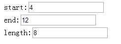

关于继承
因为在后续的章节中，我们经常会用到继承相关的知识，所以在这里在说一说javascript中的继承问题
首先，我们来看一个后续会经常用到的方法，我们会用他来创建类
1 var base = {}; 2 var slice = [].slice; 3 base.Class = function (supClass, childAttr) { 4 //若是第一个是类，便是继承；如果第一个是对象，第二个参数无意义，便是新建一个类 5 if (typeof supClass === 'object') { 6 childAttr = supClass; 7 supClass = function () { }; 8 } 9 //新建临时类，最后作为新类返回，可能是继承可能是新类 10 /*** 11 这里非常关键，为整个方法的入口，一定得看到初始化后，这里会执行构造函数 12 ***/ 13 var newClass = function () { 14 //每个类都会使用该函数，作为第一步初始化，告诉类有哪些属性 15 this._propertys_ && this._propertys_(); 16 //第二步初始化，相当于子类的构造函数，比较重要，初始化方法不一定会出现 17 this.init && this.init.applay(this, arguments); 18 }; 19 //发生继承关系，可能为空类 20 newClass.prototype = new supClass(); 21 22 //新建类必定会包含初始化函数，要么继承，如果没继承，这里也会新建 23 var supInit = newClass.prototype.init || function () { }; 24 //传入的子对象可能包含他的初始化方法，如果有一定要使用，至于父类使用与否看子类心情 25 var childInit = childAttr.init || function () { }; 26 //父类的properys方法便是指定会具有哪些属性，一定会执行 27 var _supAttr = newClass.prototype._propertys_ || function () { }; 28 //子类的初始化也一定会触发，先执行父类再执行子类 29 var _childAttr = childAttr._propertys_ || function () { }; 30 31 //为新建类（可能继承可能新建）初始化原型，上面的会重写，没有就不管他 32 for (var k in childAttr) { 33 childAttr.hasOwnProperty(k) && (newClass.prototype[k] = childAttr[k]); 34 } 35 36 //处理继承情况 37 if (arguments.length && arguments[0].prototype && arguments[0].prototype.init === supInit) { 38 //根据父类重写新建类构造时会用到的方法 39 newClass.prototype.init = function () { 40 var scope = this; 41 var args = [function () { 42 //第一个参数为父类的初始化函数，执行与否看子类心情 43 supInit.apply(scope, arguments) 44 } ]; 45 childInit.apply(scope, args.concat(slice.call(arguments))); 46 }; 47 } 48 //前面说到的，父类与子类的初始化方法一定会执行，先父后子 49 newClass.prototype._propertys_ = function () { 50 _supAttr.call(this); 51 _childAttr.call(this); 52 }; 53 54 //成员属性也得继承 55 for (var k in supClass) { 56 supClass.hasOwnProperty(k) && (newClass[k] = supClass[k]); 57 } 58 return newClass; 59 };
现在，我们使用上述方法创建一个父类AbstractView，与两个实际的View来说明继承的重要
如果每个页面都重新加载页面的话，对我们来说毫无意义，说明继承问题还是要单页，于是我们实现一个简单的MVC模式
简单的MVC
首先是我们的Control
1 var Control = base.Class({ 2 _propertys_: function () { 3 this.body = $('body'); 4 this.isCreateViewPort = false; 5 this.defaultView = 'Index'; 6 this.views = {}; 7 this.interface = { 8 forward: bind(this, this.forward) 9 }; 10 }, 11 init: function () { 12 this.loadView(this.defaultView, this.interface); 13 }, 14 createViewPort: function () { 15 if (this.isCreateViewPort) return; 16 this.viewPort = $('<div id="viewPort"></div>'); 17 this.body.append(this.viewPort); 18 this.isCreateViewPort = true; 19 }, 20 loadView: function (viewName) { 21 this.createViewPort(); 22 var v = this.views[viewName]; 23 if (!v) { 24 var View = window[viewName]; 25 v = new View(this.interface); 26 this.viewPort.append(v.root); 27 var events = v.getEvents(); 28 this._addEvent(v.root, events); 29 this.views[viewName] = v; 30 } 31 for (var k in this.views) { 32 this.views[k].hide(); 33 } 34 v.show(); 35 }, 36 forward: function (viewName) { 37 this.loadView(viewName); 38 }, 39 _addEvent: function (root, events) { 40 root = root || this.body; 41 //事件绑定 42 for (var k in events) { 43 var k_t = k.split(','); 44 root.find(k_t[0]).on(k_t[1], bind(this, events[k])); 45 } 46 } 47 });
然后是我们的父级View
1 var AbstractView = base.Class({ 2 init: function (interface) { 3 //opts为0/false等情况不予考虑 4 this.interface = interface; 5 this.root = $('<div id="' + this.viewName + '"></div>'); 6 7 }, 8 onShow: function () { 9 console.log('onshow'); 10 }, 11 show: function () { 12 this.onShow(); 13 this.root.show() 14 }, 15 onHide: function () { 16 17 console.log('onHide'); 18 }, 19 hide: function () { 20 this.onHide(); 21 this.root.hide(); 22 }, 23 forward: function (viewName) { 24 this.interface.forward(viewName); 25 } 26 });
以下是两个子集View
1 var Index = base.Class(AbstractView, { 2 _propertys_: function () { 3 this.viewName = 'index'; 4 }, 5 init: function (supInit, interface) { 6 supInit(interface); 7 this.initDom(); 8 }, 9 initDom: function () { 10 //index模板，此处我故意将id写成一样 11 var tmpt = [ 12 '我是index<input type="button" id="goto" value="去列表页">' 13 ].join(''); 14 this.root.html(tmpt); 15 }, 16 getEvents: function () { 17 return { 18 '#goto,click': function (e) { 19 this.forward('List'); 20 } 21 }; 22 } 23 }); 24 25 var List = base.Class(AbstractView, { 26 _propertys_: function () { 27 this.viewName = 'list'; 28 }, 29 init: function (supInit, interface) { 30 supInit(interface); 31 this.initDom(); 32 }, 33 initDom: function () { 34 var tmpt = [ 35 '我是list<input type="button" id="goto" value="回首页">' 36 ].join(''); 37 this.root.html(tmpt); 38 }, 39 getEvents: function () { 40 return { 41 '#goto,click': function (e) { 42 this.forward('Index'); 43 } 44 }; 45 } 46 });
然后我们调用后就有感觉了，请各位看demo
http://sandbox.runjs.cn/show/dg55tgdo
这个代码虽然简单，但是还是可以说明一些问题：
① 各个VIew独立（index与list），方便各个操作，control作为总驱动，提供各种全局接口
② 由于都是继承自AbstractView，比如我现在想在个view展示前执行一点逻辑判断的话，只需要在onload中
1 onShow: function () { 2 console.log('onshow'); 3 console.log(this.viewName + '显示前的一些逻辑'); 4 }
因为这个代码也没有什么特点，只不过简单模拟MVC了就不多说，在此希望能说清楚继承的优点，于是继续今天的话题吧
PS：今天后，后续代码中，一旦与类有关，全部使用上述代码了
自封装字段
我们有时直接访问一个字段，但与字段直接的耦合关系会逐步变的笨拙
这时为这个字段建立取值/设值的函数，并使用函数获取字段也许是一不错的选择
1 var _Class = function () { 2 this.low; 3 this.high; 4 }; 5 _Class.prototype = { 6 includes: function (arg) { 7 return arg >= this.low && arg <= this.high; 8 } 9 }; 10 11 //变成这个样子 12 var _Class = function () { 13 this.low; 14 this.high; 15 }; 16 _Class.prototype = { 17 includes: function (arg) { 18 return arg >= this.getLow() && arg <= this.getHigh(); 19 }, 20 getLow: function () { 21 //do something 22 return this.low; 23 }, 24 getHigh: function () { 25 //do something 26 return this.high; 27 } 28 };
在字段访问方式上，有时我们认为将变量定义在类中，于是我们可以自由访问，但有时我们却会间接访问
间接访问带来的好处就是，子类可以复写函数改变获取数据的途径，并且数据的管理方式更加灵活（js中就比较玄了）
我们可以先使用直接获取方式，后面换为间接方式
怎么做？
① 为待封装字段建立取值/设置函数
② 找出该字段所有引用点，将他们替换为函数
③ 测试
1 var InitRange = function (opts) { 2 this.low = opts.low; 3 this.high = opts.high; 4 }; 5 InitRange.prototype = { 6 includes: function (arg) { 7 return arg >= this.low && arg <= this.high; 8 }, 9 grow: function (factor) { 10 this.high = this.high * factor; 11 } 12 }; 13 /* 14 ------看我重构-------- 15 */ 16 var InitRange = function (opts) { 17 this.low = opts.low; 18 this.high = opts.high; 19 }; 20 InitRange.prototype = { 21 includes: function (arg) { 22 return arg >= this.getLow && arg <= this.getHigh; 23 }, 24 grow: function (factor) { 25 this.setHigh(this.getHigh() * factor) 26 }, 27 getLow: function () { 28 return this.low; 29 }, 30 getHigh: function () { 31 return this.high; 32 }, 33 setLow: function (arg) { 34 this.low = arg; 35 }, 36 setHigh: function (arg) { 37 this.high = arg; 38 } 39 };
使用本重构时，我们需要注意“在构造函数中使用设置函数”的情况
一般来说，设值函数被认为应该在对象创建后再使用，所以初始化过程中的行为可能与设置函数的行为不同
这个时候就不要构造函数时候初始化了，这个时候如果我们使用了子类，优势就比较明显了
以对象取代数据值
我们有一个数据项，需要与其他数据和行为一起使用才有意义，那么将数据变为对象
刚开始开发时，我们的数据代码会比较简单，但随着开发的进度，我们会发现数据不是那么简单了......
比如开始我们使用一个字符串来表示电话号码，但是后面电话拥有格式化、区号等行为，那么就该对象化了
来个例子说明一番，这里有一个订单的Order类
1 var Odrer = function (opts) { 2 this.customer = opts.customer 3 }; 4 Odrer.prototype = { 5 getCustomer: function () { 6 return this.customer; 7 }, 8 setCustomer: function (args) { 9 this.customer = args; 10 } 11 }; 12 13 //使用的代码可能如下 14 function numberOfOrdersFor(orders, customer) { 15 var result = 0; 16 for (var k in orders) { 17 if (orders[k] == customer) result++; 18 } 19 return result; 20 } 21 22 var Odrer = function (opts) { 23 this.customer = opts.customer 24 }; 25 Odrer.prototype = { 26 getCustomer: function () { 27 return this.customer; 28 }, 29 setCustomer: function (args) { 30 this.customer = args; 31 } 32 }; 33 34 //使用的代码可能如下 35 function numberOfOrdersFor(orders, customer) { 36 var result = 0; 37 for (var k in orders) { 38 if (orders[k].getCunstomer() == customer) result++; 39 } 40 return result; 41 } 42 43 //这里我们需要建立一个Customer的类 44 var Customer = function (name) { 45 this.name = name 46 }; 47 Customer.prototype = { 48 getName: function () { 49 return this.name; 50 } 51 }; 52 53 //第二步，我们将order中的customer字段类型修改一番（js其实不存在类型概念） 54 var Odrer = function (opts) { 55 this.customer = new Customer(opts.customer); 56 }; 57 Odrer.prototype = { 58 getCustomer: function () { 59 return this.customer.getName(); 60 }, 61 setCustomer: function (args) { 62 this.customer = new Customer(args); 63 } 64 }; 65 66 //第四步就将用到的地方改了 67 function numberOfOrdersFor(orders, customer) { 68 var result = 0; 69 for (var k in orders) { 70 if (orders[k].getCustomer() == customer) result++; 71 } 72 return result; 73 }
值对象改为引用对象/引用对象改为值对象
我们从一个类衍生出许多彼此相等的实例时，我们会希望他只是一个对象
在许多系统中，我们可以对对象做一个分类：引用对象和值对象
前者像客户、账户这样的东西，每个对象都代表真实世界中的一个实物，可以直接使用==来检测相等
后者就像日期、钱这样的东西，他完全由其所含数据值来定义，不在意副本的存在
PS：周一搞了一个通宵的班，感觉今天状态不行啊。。。。。
赋值被监视数据
我们有一些数据在页面UI中，而领域函数也需要访问这些数据
那么将数据赋值到一个领域对象中，建立一个Observer模式，用以同步领域对象和UI对象的重复数据
一个分层良好的系统，应该将处理用户界面和处理业务代码分开！！！
因为我们可能需要使用不同的用户界面来表现相同的业务，这是绝对会发生的，如果同一界面承担两种责任，那么用户界面就复杂了
而且，与UI分离后，领域对象的维护和演化将会更加容易，我们甚至可以让不同的开发者负责不同部分的开发
尽管可以轻松将行为划分到不同部位，数据却不能如此。同一项数据可能既内嵌于UI中又保存于领域模型中
PS：以前端来说就是既在标签中，又在函数中（MVC很大程度就是解决这个问题）
如果遇到代码以两层方式开发，业务逻辑内嵌于用户界面中，就应该将行为分离出来了
至此我终于知道原来自己说了一句行为与数据分离是什么意思了！！！
主要工作就是函数的分离和搬迁，移动数据即是将数据移往对象，并且提供数据同步机制（感觉有点MVVM了）
怎么做？
① 修改现有类，使其成为领域类的Observer
如果没有领域类就创建一个/如果没有“从展现类到领域类”的关联，就将领域类保存于展现类的一个字段中
② 针对UI中的数据使用自封装字段处理
③ 在事件处理函数中调用设值函数，更新UI组件
在事件处理函数中放一个设值函数，利用他将UI组件更新为内存中的值，虽然只是拿他的值为他设定而已，但是这样的设值函数便是允许其中任何动作得以于日后被执行起来的意义所在
进行这个改变时，对于组件，不要使用取值函数，应该直接取用，因为我们后面会修改取值函数，让他从领域对象取值
④ 在领域类中定于数据及其相关访问函数
确保领域类中的设值函数能干触发观察者模式的通信机制
对于被观察的数据，在领域中使用与展现类所用的相同类型（一般是字符串）来保存
⑤ 修改展现类的访问函数，将他们的操作对象改为领域对象
⑥ 修改观察者的update方法，使其从相应的领域对象中将所需数据复制给UI
这个类容比较重要，于是我们来个例子吧：
例子比较简单，当用户修改文本中的数字时，另外两个文本框中的文本框自动更新
修改start则length改变，修改length则end改变

首先，我们所有函数都写在一起：
1 <!DOCTYPE html PUBLIC "-//W3C//DTD XHTML 1.0 Transitional//EN" "http://www.w3.org/TR/xhtml1/DTD/xhtml1-transitional.dtd"> 2 <html xmlns="http://www.w3.org/1999/xhtml"> 3 <head> 4 <title></title> 5 </head> 6 <body> 7 start:<input type="text" id="start" value="4" /><br /> 8 end:<input type="text" id="end" value="12"/><br /> 9 length:<input type="text" id="length" value="8" /> 10 </body> 11 <script src="../jquery-1.7.1.js" type="text/javascript"></script> 12 <script type="text/javascript"> 13 var start = $('#start'); 14 var end = $('#end'); 15 var len = $('#length'); 16 17 //为每个input绑定失去焦点事件 18 start.blur(calculateLength); 19 end.blur(calculateLength); 20 len.blur(calculateEnd); 21 22 function calculateLength() { 23 len.val(parseInt(end.val()) - parseInt(start.val())); 24 } 25 function calculateEnd() { 26 end.val(parseInt(len.val()) + parseInt(start.val())); 27 } 28 </script> 29 </html>
这个代码其实没什么问题，但是我们现在要把与展现无关的逻辑从UI剔除（对前端来说有点难）
说白了就是将calculate*类代码提出来，于是我们需要在页面外使用start等文本框的值，所以这些数据也会被复制，并且需要与UI保持同步
这里我们先建立一个领域类，让他与我们的page产生关联，作为数据传输的枢纽，然后再将具体的运算放到其它地方
1 <!DOCTYPE html PUBLIC "-//W3C//DTD XHTML 1.0 Transitional//EN" "http://www.w3.org/TR/xhtml1/DTD/xhtml1-transitional.dtd"> 2 <html xmlns="http://www.w3.org/1999/xhtml"> 3 <head> 4 <title></title> 5 </head> 6 <body> 7 start:<input type="text" id="start" value="4" /><br /> 8 end:<input type="text" id="end" value="12"/><br /> 9 length:<input type="text" id="len" value="8" /> 10 <h3>变形</h3> 11 <div id="change"></div> 12 </body> 13 <script src="../jquery-1.7.1.js" type="text/javascript"></script> 14 <script type="text/javascript"> 15 var slice = [].slice; 16 var bind = function (scope, fun, args) { 17 args = args || []; 18 return function () { 19 fun.apply(scope, args.concat(slice.call(arguments))); 20 }; 21 }; 22 var M = function () { 23 this.start = 0; 24 this.end = 0; 25 this.len = 0; 26 }; 27 M.prototype = { 28 getStart: function () { 29 return this.start; 30 }, 31 setStart: function (args) { 32 this.start = args; 33 }, 34 getEnd: function () { 35 return this.end; 36 }, 37 setEnd: function (args) { 38 this.end = args; 39 }, 40 getLen: function () { 41 return this.len; 42 }, 43 setLen: function (args) { 44 this.len = args; 45 }, 46 calculateLength: function () { 47 //此处可以加入其它逻辑 48 var len = parseInt(this.end) - parseInt(this.start); 49 this.setLen(len); 50 }, 51 calculateEnd: function (m) { 52 var end = parseInt(this.len) + parseInt(this.start) 53 this.setEnd(end); 54 } 55 }; 56 57 58 var V = function (s, e, l) { 59 this.start = s; 60 this.end = e; 61 this.len = l; 62 this.m ; 63 }; 64 V.prototype = { 65 setM: function (args) { 66 this.m = args; 67 this.m.setStart(this.start.val()); 68 this.m.setEnd(this.end.val()); 69 this.m.setLen(this.len.val()); 70 }, 71 focusLost: function () { 72 this.start.blur(bind(this, this.start_blur)); 73 this.end.blur(bind(this, this.end_blur)); 74 this.len.blur(bind(this, this.len_blur)); 75 76 }, 77 start_blur: function () { 78 this.m.setStart(this.start.val()); 79 this.calculateLength(); 80 }, 81 end_blur: function () { 82 this.m.setEnd(this.end.val()); 83 this.calculateLength(); 84 }, 85 len_blur: function () { 86 this.m.setLen(this.len.val()); 87 this.calculateEnd(); 88 }, 89 calculateLength: function () { 90 this.m.calculateLength(); 91 this.update(); 92 93 }, 94 calculateEnd: function () { 95 this.m.calculateEnd(); 96 this.update(); 97 98 }, 99 update: function () { 100 var s1 = this.m.getStart(); 101 var s2 = this.m.getEnd(); 102 var s3 = this.m.getLen(); 103 104 this.start.val(this.m.getStart()); 105 this.end.val(this.m.getEnd()); 106 this.len.val(this.m.getLen()); 107 } 108 }; 109 110 var v1 = new V($('#start'), $('#end'), $('#len')); 111 var m1 = new M(); 112 v1.setM(m1); 113 v1.focusLost(); 114 115 //这样做的好处就是我可以轻易变形 116 //下面的重复代码我就不管了 117 var change = $('#change'); 118 var s1 = $('<select id="s1"></select>'); 119 var s2 = $('<select id="s2"></select>'); 120 var s3 = $('<select id="s3"></select>'); 121 change.append(s1); 122 change.append(s2); 123 change.append(s3); 124 125 for (var i = -100; i < 100; i++) { 126 s1.append($('<option>' + i + '</option>')); 127 s2.append($('<option>' + i + '</option>')); 128 s3.append($('<option>' + i + '</option>')); 129 } 130 131 var v2 = new V($('#s1'), $('#s2'), $('#s3')); 132 var m2 = new M(); 133 v2.setM(m2); 134 v2.focusLost(); 135 </script> 136 </html>
demo地址：
http://sandbox.runjs.cn/show/bjsc6zui
结语
今天暂时这样，我们后面继续